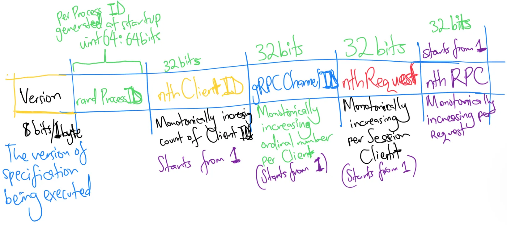

Correlated observability and introspection for Google Cloud Spanner with request-id
Emmanuel T Odeke
Orijtech, Inc.
Mon 16 June 2025
Emmanuel T Odeke
Orijtech, Inc.
Mon 16 June 2025
"x-goog-spanner-request-id" header with the respective values describing the retry characteristics of an RPC
9x-goog-spanner-request-id" consisting of "." delimited fields:| Field name | Purpose | Type/kind | Size (B) | Format |
| version | Implemented spec version (default=1) | Int8 | 1 | Decimal |
| randProcessId | Generated once at process startup by randomization | uint64 | 8 | Hexadecimal |
| nthClientId | Ordinal number of each client after invoking `spanner.NewClient` | uint32 | 4 | Decimal |
| channelId | Ordinal number of each client after invoking `spanner.NewClient` | uint32 | 4 | Decimal |
| nthRequest | Unique per client, counting the number of requests sent on channel on a client: incremented on every ABORTED and other non-idempotent errors | uint32 | 4 | Decimal |
| attempt | Incremented on every UNAVAILABLE, INTERNAL_SERVER retry | uint32 | 4 | Decimal |
| Method | RequestId |
| google.spanner.v1.Spanner/BatchCreateSessions | 1.d7866af3d6b3554c.5.4.3.2 |
which means:
d7866af3d6b3554c: the hexadecimal value of the randomly generated 8-byte id at process startup| Feature vs Language | Go | Java | Python | Node.js |
| Inclusion of request-id in error/exception | 100% | 100% | 50% | 100% |
| Streaming retries | 100% | 100% | 100% | 100% |
| Unary retries | 100% | 100% | 100% | 90% |
x_goog_spanner_request_id added to each span |
100% | 100% | 100% | 100% |
Big thanks to: Knut Olav Loite, Dhanaraj Maruthachalam, Shruti Purohit, Rahul Yadav, Sakthivel Subramanian, Gaurav Purohit, Simil Dutta, Sri Harsha CH, Surbhi Garg and many others for the code reviews and opportunity
16Emmanuel T Odeke
Orijtech, Inc.
Mon 16 June 2025